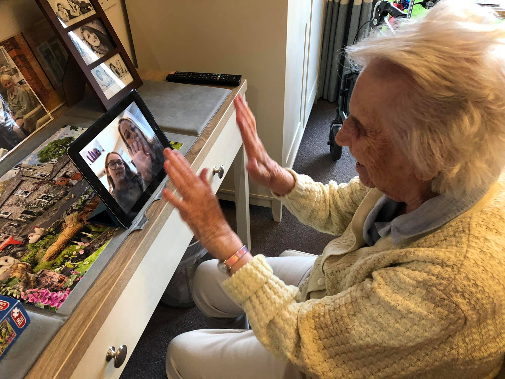

Looking after your mental health.
Adopting a healthy lifestyle.
Regular exercise, a balanced diet, and a disciplined sleeping schedule can boost your
self-esteem and help your concentration. A healthy lifestyle will also increase dopamine production in your brain and make you
feel more rewarded for your work.

Drinking in moderation.
Drinking alcohol is not a safe way to cope with mental health difficulties, as
alcohol withdrawal symptoms end up negatively affecting your brain and the rest of your body. Both men and women should stay
within the alcohol limits of 14 units per week.

Talking about your feelings.
Do not be afraid to talk about your feelings with close family members, friends, or
anyone else you prefer. Just being listened to can help you feel more supported. Remember, talking about your feelings is
not a sign of weakness but rather a sign of taking charge of your wellbeing.
Asking for help.
We all sometimes get tired or overwhelmed by how we feel when things go wrong.
Do not be afraid to ask someone for help in these situations. You could join a support group, find a councelor, or visit a guidance
practitioner. You could also talk to an emergency hotline.

Keeping in touch.
Strong family ties and supportive friends can help you deal with the stresses of
life by caring for you and keeping you grounded. They can also offer different points of view and help you have perspective
over various issues. In essence, they can help you appreciate life more.
